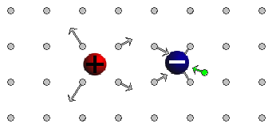
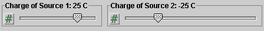
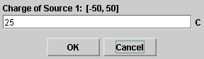

There are two basic control buttons. They are, from left to right:
-
 Rewind. Removes any field points, field vectors,
field lines, and equipotential curves that have been
plotted. Also removes the Field Point Grid if that was
selected.
Rewind. Removes any field points, field vectors,
field lines, and equipotential curves that have been
plotted. Also removes the Field Point Grid if that was
selected.
Rewind does not alter the last positions of the source charges and the settings of the Charge and Vector Length Multiplier sliders.
-
 Reset. Resets the applet to its default setting.
Reset. Resets the applet to its default setting.



When the Field-Point-Grid button is selected, a
rectangular array of field points is displayed with
arrows indicating the electric field vectors at these points.
The source charges can be dragged with the mouse, but not across the grid points. You can observe how the field vectors change with the locations of the source charges.

Click anywhere in the applet window outside of one of the two sources. The applet will display a green dot where you clicked and a green arrow indicating the electric field vector at this point. The image above illustrates a field point and the field vector at this point. (About the red and green arrows see below.)
The magnitude of the field at a given point may be too small to produce a visible arrow. You can click on the field point and drag it around. If it is close enough to one of the source charges, the field vector arrow will become visible.
You can create a pattern of field points, with corresponding field vectors, by clicking at different points. Only the last point clicked will be in green. All others will be in grey.
Green (or gray) arrows represent resultant field vectors, i.e., the sums of
the two field vectors due to the two source charges alone. Selecting the
Components button  will
cause the two individual field vectors due to the two source charges to be shown,
in addition to the resultant of these vectors. The colors of the two
component vectors match those of the corresponding source charges. Component
vectors are displayed only for the 'last' field vector, the one in green.
will
cause the two individual field vectors due to the two source charges to be shown,
in addition to the resultant of these vectors. The colors of the two
component vectors match those of the corresponding source charges. Component
vectors are displayed only for the 'last' field vector, the one in green.


To display the electric field line through a field point, click with the mouse
at the desired point and then select the
Field-Line button . The electric field line
through the field point will be drawn in green.
Repeat this procedure with other field points to exhibit the field lines through those points.
The image above shows three field points with the most recent field point and field vector in green and the others in grey. The field lines through the three field points are drawn in green. The red curves are explained in the next point on Equipotential Lines.

To display the equipotential line through a given field point, click on
the desired field point and then select the
Equipotential-Line button . The equipotential line through the field point
will be drawn in red. In the case of a positive and a negative source charge,
these "lines" are loops around the source charges.
Repeat this procedure with other field points to exhibit the equipotential lines through those points.
The preceding image under "4. Field Line" shows three red loops that are the equipotential lines through the three field points.
Click anywhere in the applet window outside of one of the two sources. The applet will display a green dot where you clicked and a green arrow indicating the electric field vector at this point. The image in Point 3 above illustrates such a field point and field vector (together with the two component vectors).
The magnitude of the field at a given point may be too small to produce a visible arrow. You can click on the field point and drag it around. If it is close enough to one of the source charges, the field vector arrow will become visible.
You can create a pattern of field points, with corresponding field vectors, by clicking at different points. Only the last point clicked, and the field vector at this point, will be in green. All others will be in grey.

There are two Charge sliders shown in the image above. They allow you to change the charges Q1 and Q2 residing on the two source objects by dragging the tab of either slider. Clicking on a slider to the left or right of the slider tab allows fine adjustment of the slider setting in steps of 1 C.
Clicking on the Input Dialog button  of a slider will open a dialog for entering an
exact value for the slider setting. The dialog for the
Q1-slider is illustrated below. The range in which
values can be entered, from -50 C to 50 C, is indicated above the data entry field.
of a slider will open a dialog for entering an
exact value for the slider setting. The dialog for the
Q1-slider is illustrated below. The range in which
values can be entered, from -50 C to 50 C, is indicated above the data entry field.

The charges Q1 and Q2 can be positive or negative or zero. The colors of the source objects are displayed as red, grey, or blue, respectively.
The Vector-Length-Mulitplier slider allows you to adjust the lengths of the arrows representing the field vectors by dragging the slider tab.
The slider does not display numerical values and does not allow you to enter any.
When the Simulate-Dipole-Field checkbox is not checked, the charge values can be varied independently and the two source balls can be moved without affecting the values of the charges. When the checkbox is checked, the two charges will automatically be set to be equal in magnitude and opposite in sign, Q1 = -Q2, and moving one of the source balls will cause the magnitude of the source charges to change so that the product |Q1|a = |Q2|a remains constant where a is the distance between the two source charges, center to center.
Note that the product |Q1|a = |Q2|a is equal to what is called the (magnitude of) the dipole moment of the two charges. In the Simulate-Dipole-System mode, the magnitude of the system's dipole moment stays constant.